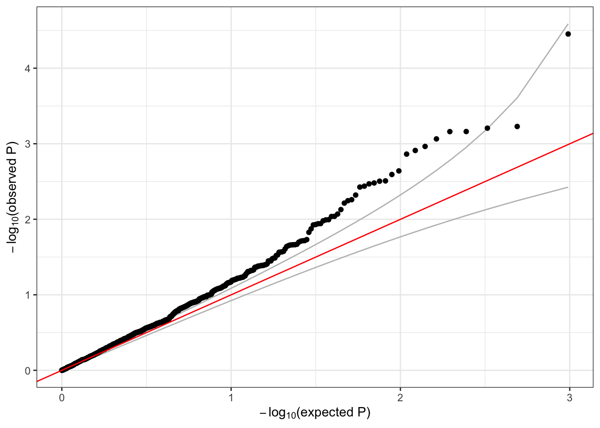
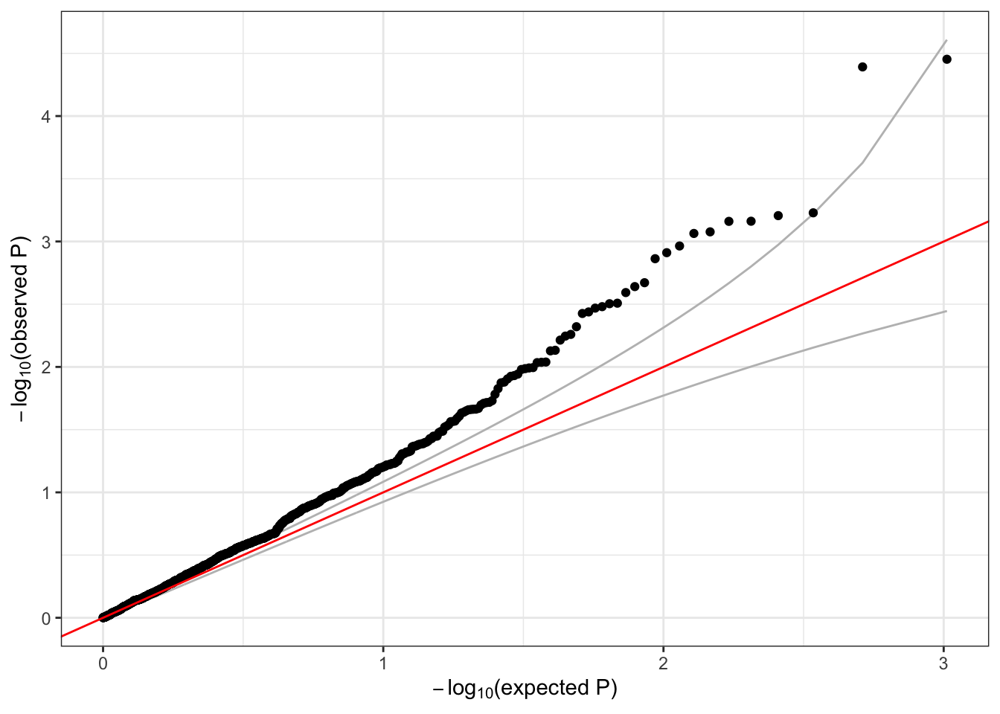

5 Association tests - Part II
These exercises continue the introduction to genetic association testing. Here, we introduce multiple-variant association tests, which are commonly used for testing rare variants in aggregate.
5.1 Sliding window tests
We can perform burden, SKAT, SKAT-O, fastSKAT, and SMMAT tests using the GENESIS function assocTestAggregate. First, we need to load the null model and AnnotatedDataFrame (sample annotation + phenotype data) that we created in the previous session, and we need to create our SeqVarData object linking the GDS file to the AnnotatedDataFrame.
repo_path <- "https://github.com/UW-GAC/SISG_2021/raw/master"
if (!dir.exists("data")) dir.create("data")
# load our null model
nullmodfile <- "data/null_model.RData"
if (!file.exists(nullmodfile)) download.file(file.path(repo_path, nullmodfile), nullmodfile)
nullmod <- get(load(nullmodfile))
# load our sample annotation
annotfile <- "data/sample_phenotype_annotation.RData"
if (!file.exists(annotfile)) download.file(file.path(repo_path, annotfile), annotfile)
annot <- get(load(annotfile))
# open the GDS file
library(SeqVarTools)
gdsfile <- "data/1KG_phase3_subset_chr1.gds"
if (!file.exists(gdsfile)) download.file(file.path(repo_path, gdsfile), gdsfile)
gdsfmt::showfile.gds(closeall=TRUE) # make sure file is not already open
gds <- seqOpen(gdsfile)
# make the seqVarData object
seqData <- SeqVarData(gds, sampleData=annot)5.1.1 Burden test
First, we perform a burden test. We restrict the test to variants with alternate allele frequency < 0.1. (For real data, this threshold would be lower, perhaps 0.05 or 0.01.) We use a flat weighting scheme – i.e. every variant gets the same weight. We define a sliding window across the genome using a SeqVarWindowIterator object.
# make the window iterator object
iterator <- SeqVarWindowIterator(seqData, windowSize=10000, windowShift=5000, verbose=FALSE)
# run the burden test
library(GENESIS)
assoc <- assocTestAggregate(iterator,
nullmod,
test="Burden",
AF.max=0.1,
weight.beta=c(1,1),
verbose = FALSE)The function returns the primary results for each window in one table. It also returns a list of tables that contain the variant details for each window tested.
## [1] "results" "variantInfo"## chr start end n.site n.alt n.sample.alt Score Score.SE Score.Stat
## 1 1 965001 975000 1 9 9 -0.1191236 0.2577712 -0.4621292
## 2 1 980001 990000 1 111 107 -1.6707553 0.8841849 -1.8895996
## 3 1 1020001 1030000 1 1 1 -0.2795838 0.1007173 -2.7759261
## 4 1 1260001 1270000 1 2 2 -0.1105487 0.1085480 -1.0184319
## 5 1 1465001 1475000 1 16 16 0.3630992 0.3456555 1.0504657
## 6 1 1730001 1740000 1 5 5 -0.1300405 0.1973175 -0.6590420
## Score.pval Est Est.SE PVE
## 1 0.643988693 -1.792788 3.879410 0.0001905115
## 2 0.058811535 -2.137109 1.130985 0.0031851797
## 3 0.005504472 -27.561563 9.928781 0.0068740102
## 4 0.308472744 -9.382319 9.212515 0.0009252485
## 5 0.293504065 3.039054 2.893054 0.0009843694
## 6 0.509868790 -3.340007 5.067973 0.0003874544##
## 0 1 2
## 143 963 16# variant details for windows with > 1 variant
idx <- which(assoc$results$n.site > 1)
head(assoc$variantInfo[idx])## [[1]]
## variant.id chr pos allele.index n.obs freq MAC weight
## 1 147 1 27443183 1 1126 0.0013321492 3 1
## 2 148 1 27448645 1 1126 0.0004440497 1 1
##
## [[2]]
## variant.id chr pos allele.index n.obs freq MAC weight
## 1 207 1 41346174 1 1126 0.0004440497 1 1
## 2 208 1 41352776 1 1126 0.0017761989 4 1
##
## [[3]]
## variant.id chr pos allele.index n.obs freq MAC weight
## 1 246 1 51376035 1 1126 0.0004440497 1 1
## 2 247 1 51381953 1 1126 0.0013321492 3 1
##
## [[4]]
## variant.id chr pos allele.index n.obs freq MAC weight
## 1 279 1 57342828 1 1126 0.0062166963 14 1
## 2 280 1 57344100 1 1126 0.0004440497 1 1
##
## [[5]]
## variant.id chr pos allele.index n.obs freq MAC weight
## 1 293 1 59912193 1 1126 0.001776199 4 1
## 2 294 1 59917976 1 1126 0.003108348 7 1
##
## [[6]]
## variant.id chr pos allele.index n.obs freq MAC weight
## 1 356 1 73050313 1 1126 0.0368561279 83 1
## 2 357 1 73050352 1 1126 0.0008880995 2 1We can make a QQ plot of the burden p-values from the main results table.
library(ggplot2)
qqPlot <- function(pval) {
pval <- pval[!is.na(pval)]
n <- length(pval)
x <- 1:n
dat <- data.frame(obs=sort(pval),
exp=x/n,
upper=qbeta(0.025, x, rev(x)),
lower=qbeta(0.975, x, rev(x)))
ggplot(dat, aes(-log10(exp), -log10(obs))) +
geom_line(aes(-log10(exp), -log10(upper)), color="gray") +
geom_line(aes(-log10(exp), -log10(lower)), color="gray") +
geom_point() +
geom_abline(intercept=0, slope=1, color="red") +
xlab(expression(paste(-log[10], "(expected P)"))) +
ylab(expression(paste(-log[10], "(observed P)"))) +
theme_bw()
}
# make a QQ plot of the burden test p-values
qqPlot(assoc$results$Score.pval)
5.1.2 SKAT test
We can also perform a SKAT test. This time, we will use the Wu weights, which give larger weights to rarer variants.
## # of selected variants: 1# run the SKAT test
assoc <- assocTestAggregate(iterator,
nullmod,
test="SKAT",
AF.max=0.1,
weight.beta=c(1,25),
verbose = FALSE)
# results for each window
head(assoc$results)## chr start end n.site n.alt n.sample.alt Q pval err
## 1 1 965001 975000 1 9 9 7.318095 0.643988693 0
## 2 1 980001 990000 1 111 107 154.178289 0.058811535 0
## 3 1 1020001 1030000 1 1 1 47.823918 0.005504472 0
## 4 1 1260001 1270000 1 2 2 7.319239 0.308472744 0
## 5 1 1465001 1475000 1 16 16 58.518665 0.293504065 0
## 6 1 1730001 1740000 1 5 5 9.499539 0.509868790 0
## pval.method
## 1 integration
## 2 integration
## 3 integration
## 4 integration
## 5 integration
## 6 integration# variant details for windows with > 1 variant
idx <- which(assoc$results$n.site > 1)
head(assoc$variantInfo[idx])## [[1]]
## variant.id chr pos allele.index n.obs freq MAC weight
## 1 147 1 27443183 1 1126 0.0013321492 3 24.21284
## 2 148 1 27448645 1 1126 0.0004440497 1 24.73493
##
## [[2]]
## variant.id chr pos allele.index n.obs freq MAC weight
## 1 207 1 41346174 1 1126 0.0004440497 1 24.73493
## 2 208 1 41352776 1 1126 0.0017761989 4 23.95577
##
## [[3]]
## variant.id chr pos allele.index n.obs freq MAC weight
## 1 246 1 51376035 1 1126 0.0004440497 1 24.73493
## 2 247 1 51381953 1 1126 0.0013321492 3 24.21284
##
## [[4]]
## variant.id chr pos allele.index n.obs freq MAC weight
## 1 279 1 57342828 1 1126 0.0062166963 14 21.52488
## 2 280 1 57344100 1 1126 0.0004440497 1 24.73493
##
## [[5]]
## variant.id chr pos allele.index n.obs freq MAC weight
## 1 293 1 59912193 1 1126 0.001776199 4 23.95577
## 2 294 1 59917976 1 1126 0.003108348 7 23.20016
##
## [[6]]
## variant.id chr pos allele.index n.obs freq MAC weight
## 1 356 1 73050313 1 1126 0.0368561279 83 10.15145
## 2 357 1 73050352 1 1126 0.0008880995 2 24.472555.2 Exercise
- Perform a sliding window SKAT test for the outcome status. Adjust your model for the covariates sex and study. When performing your SKAT test, use all variants with alternate allele frequency < 20%, and use the Wu weights to give larger weights to rarer variants. Use the same
windowSizeandwindowShiftas in the examples. How many windows have >1 variant? Make a QQ plot of the SKAT p-values.
5.3 Solution
- Perform a sliding window SKAT test for the outcome status. Adjust your model for the covariates sex and study. When performing your SKAT test, use all variants with alternate allele frequency < 20%, and use the Wu weights to give larger weights to rarer variants. Use the same
windowSizeandwindowShiftas in the examples. How many windows have >1 variant? Make a QQ plot of the SKAT p-values.
The first step is to fit our null model – since our outcome, status, is a binary variable, we must fit a logistic regression null model using the family = binomial argument. The second step is to create our SeqVarWindowIterator object. The third step is to perform the SKAT test using assocTestAggregate – we can set the maximum alternate allele frequency with the AF.max argument, and we can set the variant weights with the weight.beta argument.
nullmod.status <- fitNullModel(annot,
outcome="status",
covars=c("sex", "study"),
family=binomial,
verbose=FALSE)
seqResetFilter(seqData, verbose=FALSE)
iterator <- SeqVarWindowIterator(seqData, windowSize=10000, windowShift=5000, verbose=FALSE)
assoc <- assocTestAggregate(iterator,
nullmod,
test="SKAT",
AF.max=0.2,
weight.beta=c(1,25),
verbose = FALSE)
# results for each window
head(assoc$results)## chr start end n.site n.alt n.sample.alt Q pval err
## 1 1 965001 975000 1 9 9 7.318095 0.643988693 0
## 2 1 980001 990000 1 111 107 154.178289 0.058811535 0
## 3 1 1020001 1030000 1 1 1 47.823918 0.005504472 0
## 4 1 1260001 1270000 1 2 2 7.319239 0.308472744 0
## 5 1 1465001 1475000 1 16 16 58.518665 0.293504065 0
## 6 1 1730001 1740000 1 5 5 9.499539 0.509868790 0
## pval.method
## 1 integration
## 2 integration
## 3 integration
## 4 integration
## 5 integration
## 6 integration##
## 0 1 2
## 95 1007 20# variant details for windows with > 1 variant
idx <- which(assoc$results$n.site > 1)
head(assoc$variantInfo[idx])## [[1]]
## variant.id chr pos allele.index n.obs freq MAC weight
## 1 147 1 27443183 1 1126 0.0013321492 3 24.21284
## 2 148 1 27448645 1 1126 0.0004440497 1 24.73493
##
## [[2]]
## variant.id chr pos allele.index n.obs freq MAC weight
## 1 207 1 41346174 1 1126 0.0004440497 1 24.73493
## 2 208 1 41352776 1 1126 0.0017761989 4 23.95577
##
## [[3]]
## variant.id chr pos allele.index n.obs freq MAC weight
## 1 246 1 51376035 1 1126 0.0004440497 1 24.73493
## 2 247 1 51381953 1 1126 0.0013321492 3 24.21284
##
## [[4]]
## variant.id chr pos allele.index n.obs freq MAC weight
## 1 279 1 57342828 1 1126 0.0062166963 14 21.52488
## 2 280 1 57344100 1 1126 0.0004440497 1 24.73493
##
## [[5]]
## variant.id chr pos allele.index n.obs freq MAC weight
## 1 293 1 59912193 1 1126 0.001776199 4 23.95577
## 2 294 1 59917976 1 1126 0.003108348 7 23.20016
##
## [[6]]
## variant.id chr pos allele.index n.obs freq MAC weight
## 1 356 1 73050313 1 1126 0.0368561279 83 10.15145
## 2 357 1 73050352 1 1126 0.0008880995 2 24.47255